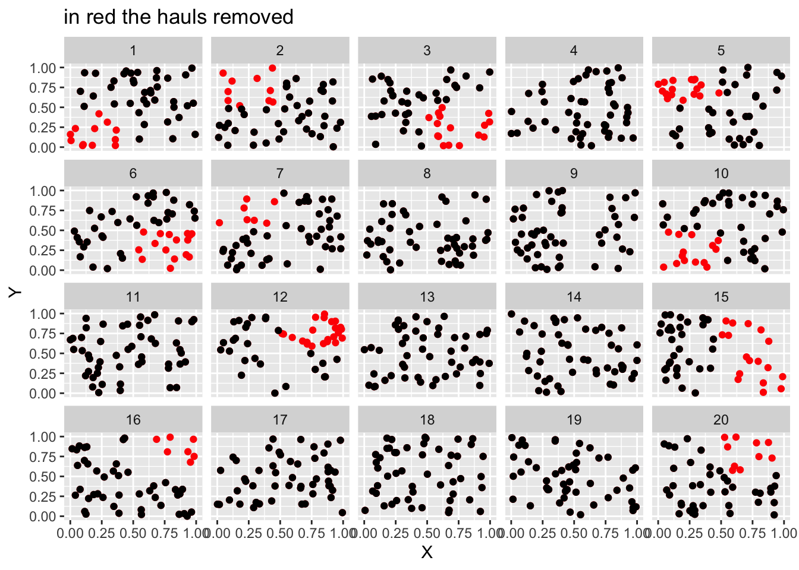

library(tidyverse)
library(tidylog)
library(sdmTMB)
library(patchwork)Simulation Withing sdmTMB
Libraries
Data simulation
set.seed(99)
# true data
true_data <- data.frame(
X = runif(1000), Y = runif(1000), # coordinates
b1 = rnorm(1000), b2 = rnorm(1000), # beta1 and beta2 are two covariates
year = rep(1:20, each = 50), #year
f_year = as.factor(rep(1:20, each = 50)) # for random intercept
) # it has 1k rows, in the paper we have ~ 3600
# mesh
true_mesh <- make_mesh(true_data, xy_cols = c("X", "Y"), type='kmeans',n_knots = 300)
# plot the mesh
plot(true_mesh)
This is the data-generating model:
sim_data <- sdmTMB_simulate(
formula = ~ 1 + b1 + b2 + (1|f_year), # data generating formula
data = true_data,
time = "year",
mesh = true_mesh,
family = tweedie(),
range = 0.5, # true matern range
sigma_O = 0.7, # true spatial sd
phi = 0.9, #Observation error scale parameter
B = c(0.2, -0.4, 0.3) # true betas
)
# see https://pbs-assess.github.io/sdmTMB/ for synatx details
sim_data$f_year <- as.factor(sim_data$year)Fitting the model with the full dataset
We now fit the model exploiting the full dataset
# first a mesh
mesh_full <- make_mesh(sim_data, xy_cols = c("X", "Y"), type='kmeans',n_knots = 300)
plot(mesh_full)
# now the model
m_full=sdmTMB(observed ~ 1 + b1 + b2 + (1|f_year), data = sim_data, mesh = mesh_full, time = "year",spatiotemporal = 'off',family = tweedie())
summary(m_full) # parameters estimateSpatial model fit by ML ['sdmTMB']
Formula: observed ~ 1 + b1 + b2 + (1 | f_year)
Mesh: mesh_full
Time column: year
Data: sim_data
Family: tweedie(link = 'log')
coef.est coef.se
(Intercept) 0.54 0.30
b1 -0.37 0.03
b2 0.29 0.03
Random intercepts:
Std. Dev.
f_year 1.02
Dispersion parameter: 0.93
Tweedie p: 1.50
Matern range: 0.36
Spatial SD: 0.52
ML criterion at convergence: 1840.409
See ?tidy.sdmTMB to extract these values as a data frame.Removing data
We remove some data from the simulated dataset. We dropped ~15 % of the hauls.
# creating the spatial cluster
sim_data$clust <- kmeans(sim_data[, c("X", "Y")], 4)$cluster # we have now 4 spatial clusters
# we remove some clusters from some year
sim_data_missing=sim_data %>% filter(!(clust == 1 & year %in% c(1,10)) & !(clust == 4 & year %in% c(2,5,7)) & !(clust == 3 & year %in% c(12,15,16,20))& !(clust == 2 & year %in% c(15,3,6)) )
# ~15 % of the hauls are removed
ggplot()+geom_point(data=sim_data,aes(X,Y),color='red')+geom_point(data=sim_data_missing,aes(X,Y),color='black')+facet_wrap(~year)+ggtitle('in red the hauls removed') # plot the hauls removed
Reffiting the model on the subset of data
We refit the same model on the subsetted data:
# first a mesh
mesh_missing <- make_mesh(sim_data_missing, xy_cols = c("X", "Y"), type='kmeans',n_knots = 300) # we need a new mesh
plot(mesh_missing) # plot the new mesh
m_missing = sdmTMB(
observed ~ 1 + b1 + b2 + (1 | f_year),
data = sim_data_missing,
mesh = mesh_missing,
time = "year",
spatiotemporal = 'off',
family = tweedie()
) # refit the model with less data
summary(m_missing) # check the parametersSpatial model fit by ML ['sdmTMB']
Formula: observed ~ 1 + b1 + b2 + (1 | f_year)
Mesh: mesh_missing
Time column: year
Data: sim_data_missing
Family: tweedie(link = 'log')
coef.est coef.se
(Intercept) 0.52 0.31
b1 -0.37 0.03
b2 0.29 0.03
Random intercepts:
Std. Dev.
f_year 1.01
Dispersion parameter: 0.94
Tweedie p: 1.50
Matern range: 0.37
Spatial SD: 0.53
ML criterion at convergence: 1567.934
See ?tidy.sdmTMB to extract these values as a data frame.We compare the two models
coeff_fx=rbind(cbind(tidy(m_full,conf.int = T),m='m_full'),cbind(tidy(m_missing,conf.int = T),m='m_missing')) # fixed effects
# plot
p1=ggplot(data= coeff_fx, aes(x = estimate, xmin = conf.low, xmax = conf.high, y = term,color=m)) +
geom_vline(xintercept = 0, color = "black", linetype = "longdash") +
geom_pointrange(position=position_dodge2(width=0.5,reverse = T),fatten=1.2) +labs(x = "Estimate", y = "Standardised coefficient" )
coeff_ran=rbind(cbind(tidy(m_full,conf.int = T,effects = 'ran_pars'),m='m_full'),cbind(tidy(m_missing,conf.int = T,effects = 'ran_pars'),m='m_missing')) # random effects
p2=ggplot(data= coeff_ran[!grepl(c('tweedie_p|phi|twee|range'),coeff_ran$term),], aes(x = estimate, xmin = conf.low, xmax = conf.high, y = term,color=m)) +
geom_vline(xintercept = 0,linetype = "longdash") +
geom_pointrange(position=position_dodge2(width=0.5,reverse=T),fatten = 1.2) + labs(x = "Estimate", y = "Standardised coefficient")
p1+p2+plot_layout(guides = 'collect')
The to models show very similar results, despite the second being fitted on 15 % less data.